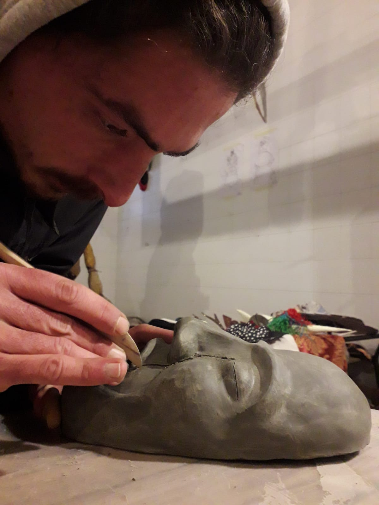
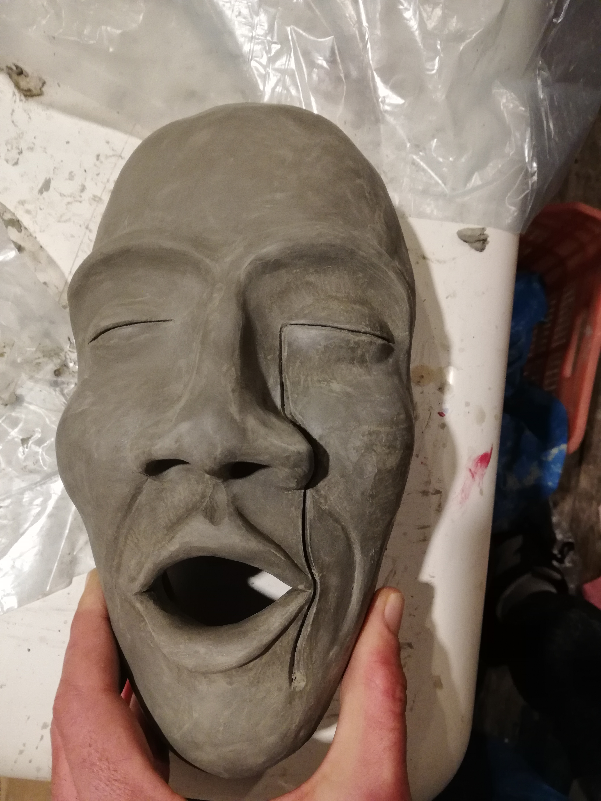
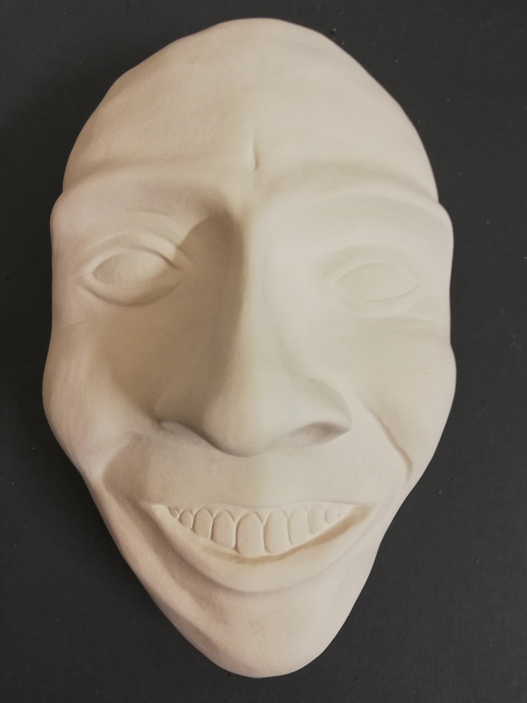
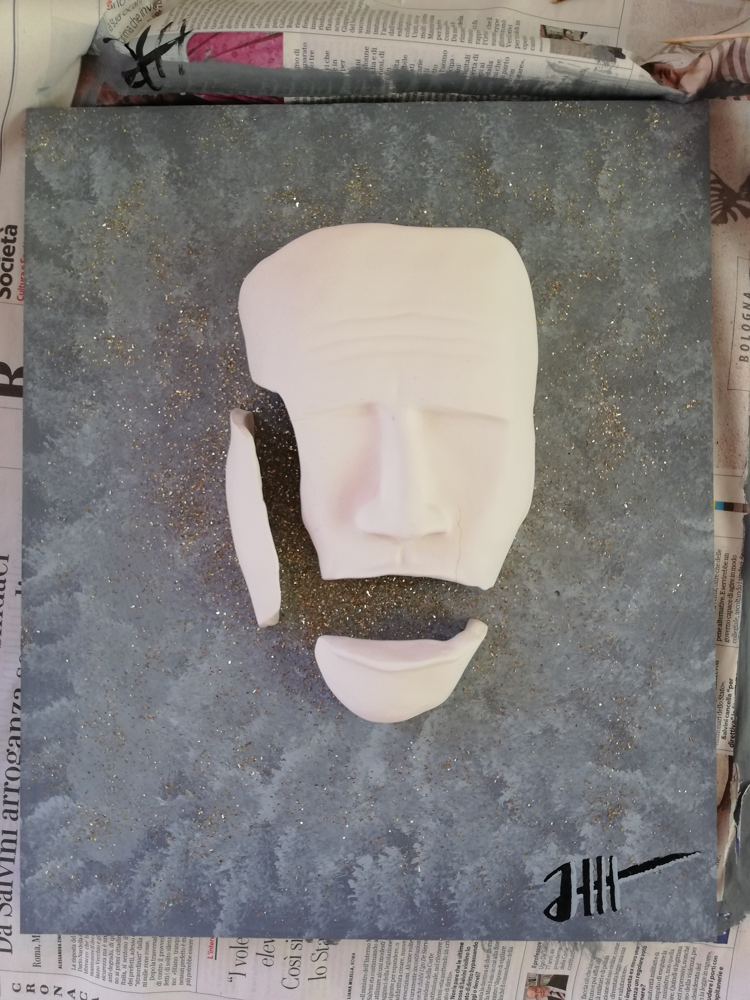
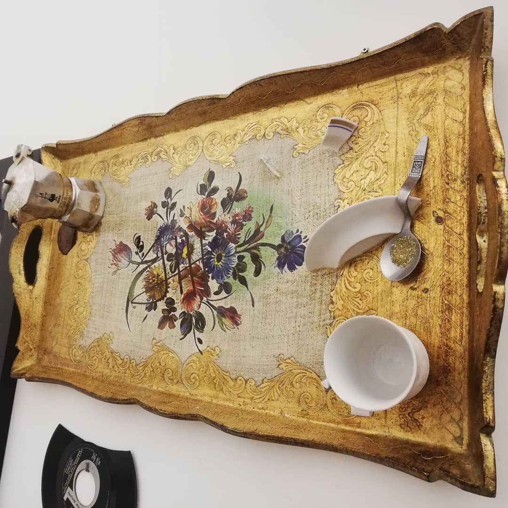

Hobbies and interests
In my free time, first of all, I dedicate myself to taking care of my physical (and psychological) health. I use to go to the gym 3 times a week and when I want and the weather is nice, I use to go for a walk in the beach.
One thing that I love to do is cooking. I'm very good at cooking pasta, bread, pizza.
Another thing that I love to do is taking care of my plants. I do live in an apartment with two balcony, and I filled them with succulent and aromatic plants.
I combine these two passions in a special pasta seasoned with a sauce made by lightly frying together all of my herbs in butter, with a bit of milk and honey. Delicious!
Sometimes I like to play soccer with some friend. I love to play soccer in the sand.
I am a creative person and - besides music - in some periods of my life I dedicated myself to creating clay and stone sculptures.








